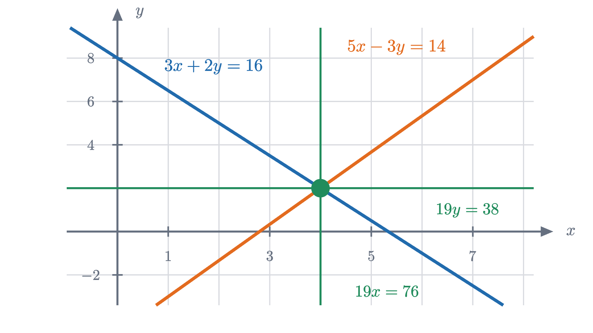
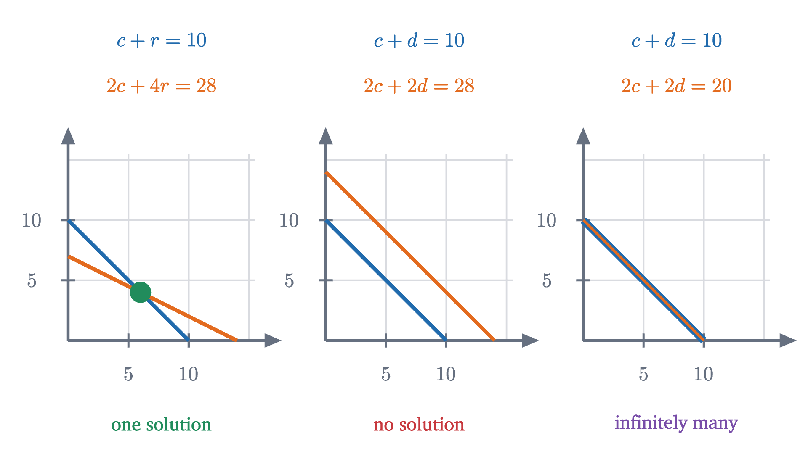
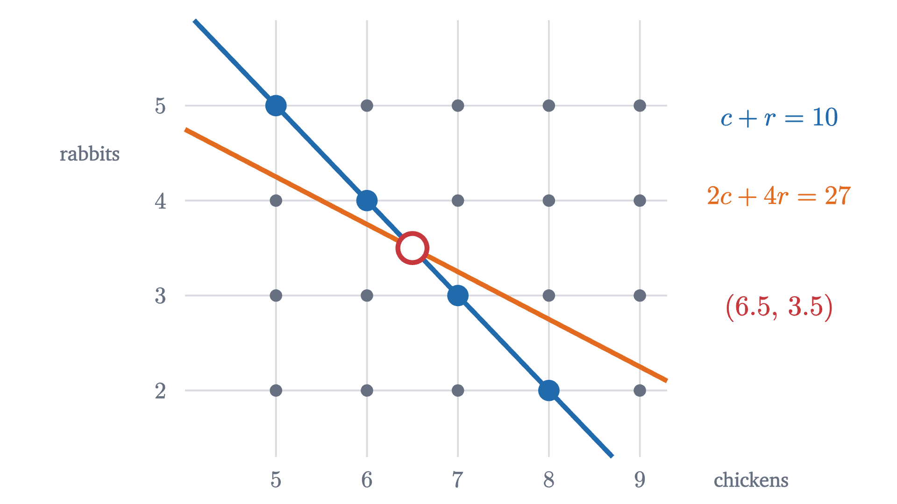

Solving two equations at once: where lines meet
Ten heads and 28 legs: how many chickens and rabbits? Each clue is a line of possibilities, and elimination pivots a line about the point where they cross.
A farmer keeps chickens and rabbits in one pen. Looking over the fence you count 10 heads, and looking under it you count 28 legs. How many chickens are there, and how many rabbits?
Neither count answers the question by itself. Ten heads could be ten chickens, or ten rabbits, or anything in between. Twenty-eight legs could be seven rabbits, or fourteen chickens, or several other mixtures. The answer comes only from holding both facts at once. This puzzle is at least 1500 years old (it appears in the Chinese text Sunzi Suanjing with 35 heads and 94 feet), and the idea that solves it is the idea behind every system of equations.
Pause and try
Before reading on, solve the puzzle by any method you like. Then try to explain why there is only one answer.
Show answerHide answer
There are 6 chickens and 4 rabbits: $6 + 4 = 10$ heads and $6 \times 2 + 4 \times 4 = 12 + 16 = 28$ legs. The rest of this lesson gives three ways to find this and one reason it is the only possibility.
Handing out the legs
Here is a way to solve it that needs no algebra. Every animal, chicken or rabbit, has at least two legs. So begin by giving each of the ten heads two legs. That uses 20 legs, and 8 are left over. The leftover legs can only belong to rabbits, and each rabbit needs exactly two more. Eight legs in pairs is four pairs, so there are 4 rabbits, and the other 6 animals are chickens.
That argument is quick, and it looks like a trick that depends on legs coming in twos and fours. It is actually a general method in disguise, and the way to see that is to write the puzzle in symbols and then draw it.
Each clue is a line of possibilities
Let $c$ be the number of chickens and $r$ the number of rabbits. The two counts say
Take the first equation alone. It has many solutions: $(c, r) = (10, 0), (9, 1), (8, 2)$, and so on down to $(0, 10)$. Plot each as a point, with chickens measured across and rabbits measured up, and the eleven points fall on a straight line. The second equation alone has its own list: $(14, 0), (12, 1), (10, 2), \dots, (0, 7)$, which falls on a different straight line. Step through the figure.
The picture explains why the answer is unique. Each clue confines the answer to a line, and two different straight lines that cross do so at a single point.
We should check that these sets of points really are straight lines. The lesson on slope proved that the graph of $y = mx + b$ is a straight line with slope $m$ crossing the vertical axis at height $b$. Our equations can be put in that form by solving for $r$:
The slopes $-1$ and $-\frac12$ are the trades in the figure: one rabbit gained per chicken lost on the first line, half a rabbit per chicken on the second.
The solutions of one linear equation always form a straight line. If $b \ne 0$, dividing by $b$ gives $y = -\frac{a}{b}x + \frac{c}{b}$, a line of slope $-\frac{a}{b}$. If $b = 0$, then $a \ne 0$ and the equation says $x = \frac{c}{a}$, a vertical line. So a solution of a system is a point that lies on two lines.
Substitution: walk along one line until the other is satisfied
Reading the crossing off a drawing works when the answer is a pair of small whole numbers. We want a method that works by calculation.
The first equation says $r = 10 - c$: once you choose $c$, the line tells you $r$. So every point on the first line has the form $(c, 10 - c)$, and we can ask which of these points satisfies the second equation. Replace $r$ by $10 - c$ there:
Then $r = 10 - 6 = 4$. This is the substitution method, and the animation at the top of the page is a picture of it. The marker walks along the ten-heads line, the leg count $2c + 4(10 - c) = 40 - 2c$ changes by 2 at each step, and we stop when it reads 28.
Elimination: a third line through the same point
The leg-handing argument did something different. It never solved for one unknown in terms of the other. In symbols, “give every head two legs” is the first equation multiplied by 2:
“See what is left over” is subtracting that from the second equation, left side from left side and right side from right side:
The chickens have disappeared from the equation, which is why this is called elimination. It is not obvious that one equation may be subtracted from another, so the step needs a reason.
At a solution, both equations are true statements about numbers. If $2c + 4r$ really is 28 and $2c + 2r$ really is 20, then their difference really is 8. So any solution of the system must also satisfy the new equation $2r = 8$. Put geometrically: the new equation is a new line, and it passes through the crossing point of the old two.
Nothing forced us to subtract exactly two copies of the first equation. Subtract $t$ copies, for any number $t$, and you get
a whole family of lines, every one of which must pass through the crossing.
Pause and try
Take $t = 3$. Write down the combined equation and check that $(6, 4)$ satisfies it. Then find the value of $t$ that eliminates $r$ instead of $c$, and solve the resulting equation.
Show answerHide answer
With $t = 3$: $-c + r = -2$, and indeed $-6 + 4 = -2$. To eliminate $r$ we need $4 - t = 0$, so $t = 4$, which gives $-2c = -12$ and $c = 6$.
As $t$ changes, the combined line swings around the crossing point like a clock hand. Among all those lines two are especially easy to read, the horizontal one and the vertical one, because a horizontal line states the value of $r$ and a vertical line states the value of $c$. Elimination is the art of choosing the multiple that swings the line flat or upright.
We argued that every solution of the original pair satisfies the combined equation. For the method to be safe we need the reverse as well: replacing an equation by a combination must not let in new, false solutions.
Two things about this statement matter. It keeps $E_1$: the pair $\{E_1, E_3\}$ has the same solutions as the pair $\{E_1, E_2\}$, but $E_3$ alone is only one line and has many more. And the step can be undone, which is what the second half of the proof uses. A second safe step is to multiply both sides of one equation by a number that is not zero, since dividing by that number undoes it.
Worked examples

When there is no crossing, or too many
Two lines do not always cross at one point. Suppose the pen holds chickens and ducks, both two-legged, and you count 10 heads and 28 legs.
Pause and try
Write the two equations for $c$ chickens and $d$ ducks. Try to eliminate $c$. What happens, and what does it say about the count?
Show answerHide answer
The equations are $c + d = 10$ and $2c + 2d = 28$. Subtracting twice the first from the second eliminates $c$ and $d$ together and leaves $0 = 8$, which is false. No pair $(c, d)$ can satisfy both equations: ten two-legged birds have 20 legs, never 28, so someone miscounted.
In the picture, $2c + 2d = 28$ is the line $c + d = 14$, which has the same slope as $c + d = 10$ and sits above it. The lines are parallel and never meet. If the leg count had been 20, the second equation would be $2c + 2d = 20$, which is the first equation doubled. Then the two lines coincide and every point of the line is a solution: the leg count tells you nothing that the head count had not.

These are the only three things that can happen, and one number computed from the coefficients tells them apart.
When $b_1$ and $b_2$ are not zero, the two slopes are $-\frac{a_1}{b_1}$ and $-\frac{a_2}{b_2}$, and they are equal exactly when $a_1b_2 = a_2b_1$. So $D = 0$ says that the lines have the same direction. The number $D$ is called the determinant of the system, and it has a geometric meaning of its own, as the factor by which a matrix scales areas. For the farm, $D = 1 \times 4 - 2 \times 1 = 2$, and the formulas give $c = \frac{10 \times 4 - 28 \times 1}{2} = 6$ and $r = \frac{1 \times 28 - 2 \times 10}{2} = 4$.
A solution the farm cannot use
The theorem is about real numbers. A puzzle about animals wants whole numbers that are not negative, and the algebra does not know that. Change the leg count to 27. Then $D$ is still 2, so there is exactly one solution: twice the heads equation subtracted from $2c + 4r = 27$ leaves $2r = 7$, so $r = 3.5$ and $c = 6.5$.

Half a rabbit is not an answer, so the count of 27 must be wrong. (You could have known in advance: $2c + 4r$ is even for whole numbers $c$ and $r$.) In the same way, 10 heads and 44 legs gives $r = 12$ and $c = -2$, a crossing point outside the part of the plane where the puzzle lives. After solving a system that came from a situation, check the solution against the situation.
Common mistakes
Stepping back
One equation with two unknowns leaves a line of possibilities. A second equation leaves another line, and what both allow is where the lines meet. The difficulty was that a crossing point is easy to see and awkward to compute, and the idea that removed it was that equations may be combined: any multiple of one added to the other gives a new line through the same point, and we are free to choose the one that is horizontal or vertical.
That idea scales up. With three unknowns each equation is a plane in space, and with a thousand unknowns there is no picture at all, but adding multiples of equations to one another to eliminate unknowns one at a time still works. Under the name Gaussian elimination it is how computers solve the large systems that arise in engineering and statistics, and the lesson on linear systems explains the same three cases, one solution, none or infinitely many, by treating the two left sides as a single transformation of the plane.
Check yourself
The system $x + 2y = 7$, $3x + 6y = 21$ has how many solutions?
Problems
Problem 1
Solve by substitution: $y = 2x - 1$ and $3x + 2y = 12$.
Show solutionHide solution
The first equation gives $y$ in terms of $x$, so substitute it into the second: $3x + 2(2x - 1) = 12$, that is, $7x - 2 = 12$, so $x = 2$. Then $y = 2 \times 2 - 1 = 3$.
Check in the second equation: $3 \times 2 + 2 \times 3 = 12$. The solution is $(2, 3)$.
Problem 2
Solve by elimination: $x + y = 9$ and $x - y = 3$. Then describe the two lines and their crossing point.
Show solutionHide solution
Adding the equations cancels $y$: $2x = 12$, so $x = 6$. Subtracting the second from the first cancels $x$: $2y = 6$, so $y = 3$.
Check: $6 + 3 = 9$ and $6 - 3 = 3$. The first line is $y = -x + 9$, falling with slope $-1$, and the second is $y = x - 3$, rising with slope 1. They cross at $(6, 3)$.
Problem 3
A parking lot holds motorcycles and cars: 30 vehicles and 96 wheels in all. Solve it twice, once by the “hand out the wheels” argument in words, and once by writing equations and eliminating.
Show solutionHide solution
In words. Give every vehicle two wheels: that uses 60. The remaining $96 - 60 = 36$ wheels belong to cars, two more for each, so there are 18 cars and $30 - 18 = 12$ motorcycles.
With equations. Let $m$ be the number of motorcycles and $k$ the number of cars: $m + k = 30$ and $2m + 4k = 96$. Subtracting twice the first equation from the second gives $2k = 36$, so $k = 18$ and $m = 12$.
Check: $12 \times 2 + 18 \times 4 = 24 + 72 = 96$. Each sentence of the first argument is one line of the second.
Problem 4
Solve $4x + 3y = 5$ and $6x - 5y = 17$.
Show solutionHide solution
To cancel $x$, scale so both equations carry $12x$: three times the first is $12x + 9y = 15$, and twice the second is $12x - 10y = 34$. Subtract the second of these from the first: $9y - (-10y) = 15 - 34$, so $19y = -19$ and $y = -1$.
Put this into the first original equation: $4x - 3 = 5$, so $x = 2$.
Check in the second: $6 \times 2 - 5 \times (-1) = 12 + 5 = 17$. The solution is $(2, -1)$.
Problem 5
For each system, compute $D = a_1b_2 - a_2b_1$ and decide how many solutions there are: (a) $2x - y = 4$, $-4x + 2y = 3$; (b) $2x - y = 4$, $-4x + 2y = -8$; (c) $2x - y = 4$, $x + 2y = 7$.
Show solutionHide solution
(a) $D = 2 \times 2 - (-4) \times (-1) = 4 - 4 = 0$. Adding twice the first equation to the second gives $0 = 11$, which is false. No solution: the lines are parallel.
(b) $D = 0$ again. Adding twice the first to the second gives $0 = 0$. The second equation is $-2$ times the first, so the lines are the same and there are infinitely many solutions, namely all points with $y = 2x - 4$.
(c) $D = 2 \times 2 - 1 \times (-1) = 5 \ne 0$, so there is exactly one solution. Twice the first plus the second gives $5x = 15$, so $x = 3$, and then $y = 2 \times 3 - 4 = 2$. Check: $3 + 2 \times 2 = 7$.
Problem 6
A boat travels 24 km downstream in 2 hours, and takes 3 hours to return upstream. Assume the boat’s speed through the water and the speed of the current are both constant. Find them.
Show solutionHide solution
Let $b$ be the boat’s speed through the water and $w$ the speed of the current, in km per hour. Going downstream the current helps, so the speed over the ground is $b + w = \frac{24}{2} = 12$. Going upstream it hinders: $b - w = \frac{24}{3} = 8$.
Adding the equations gives $2b = 20$, so $b = 10$. Subtracting gives $2w = 4$, so $w = 2$.
Check: downstream at $10 + 2 = 12$ km/h for 2 hours is 24 km, and upstream at $10 - 2 = 8$ km/h for 3 hours is 24 km. The boat makes 10 km/h and the current runs at 2 km/h.
Problem 7
For which value of $k$ does the system $2x + 3y = 6$, $4x + ky = 5$ have no solution? For that $k$, is there any right-hand side in place of 5 that would give infinitely many solutions?
Show solutionHide solution
The system fails to have exactly one solution when $D = 2k - 4 \times 3 = 2k - 12 = 0$, that is, when $k = 6$. For $k = 6$, subtracting twice the first equation from the second gives $0 = 5 - 12 = -7$, which is false, so there is no solution. For every other $k$ there is exactly one.
With $k = 6$ and a right-hand side $s$ in place of 5, the same subtraction gives $0 = s - 12$. This is true exactly when $s = 12$, and then the second equation, $4x + 6y = 12$, is twice the first, so the lines coincide and there are infinitely many solutions.
Problem 8
Find the error. “Take the system $x + y = 5$, $2x + 2y = 10$. Subtracting twice the first equation from the second gives $0 = 0$. From the first equation $y = 5 - x$, and choosing $x = 1$ gives $y = 4$. Therefore the solution of the system is $(1, 4)$.”
Show solutionHide solution
Every computation is correct, and $(1, 4)$ is a solution: $1 + 4 = 5$ and $2 + 8 = 10$. The error is the word “the”. The second equation is twice the first, so $D = 1 \times 2 - 2 \times 1 = 0$ and the combined equation $0 = 0$ imposes no condition. The system has the same solutions as $x + y = 5$ alone, an entire line of them, and $x = 1$ was a free choice. Choosing $x = 2$ gives $(2, 3)$, which is just as good. The correct conclusion is that the solutions are all pairs $(x, 5 - x)$.